MAJ JENKINS.
ILLUSTRATED STORYBOOK
This project serves as a telling of The Witcher, a contemporary Polish fantasy series written by Andrzej Sapkowski. It is reimagined in the medium of web design, an interactive storybook woven from curated scenes and quotes from the series.
The saga addresses the witcher Geralt and others' reactions to the raising and later disappearance of a very special girl, Cirilla "Ciri" of Cintra, who is Geralt's daughter by bonds of destiny.
In seeking to rescue his daughter, Geralt finds himself accompanied by a group of comrades willing to share in his journey. Their resemblance of a traditional RPG team of heroes [with two swordsmen, a ranger, a healer, and a rogue] inspired this concept.
PLAY HERE: https://xarts.usfca.edu/~mrjenkins/art272/project2/
 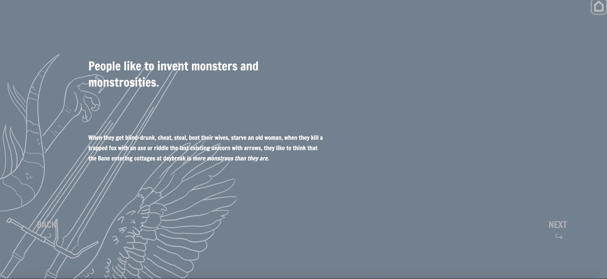
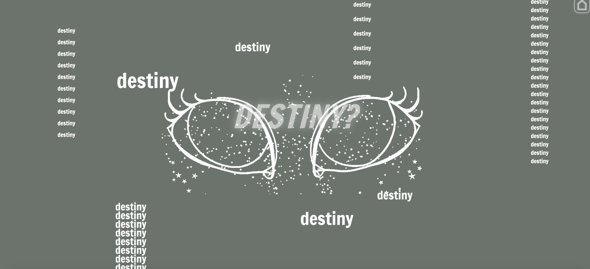
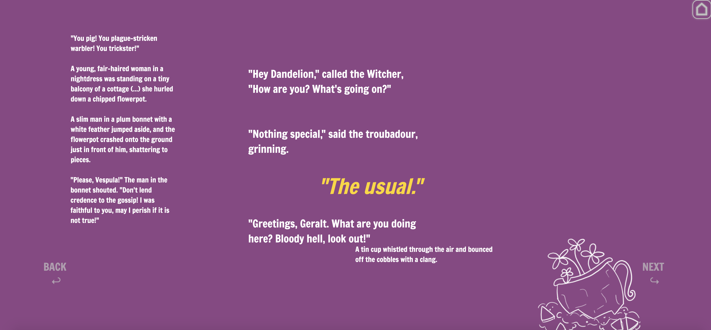
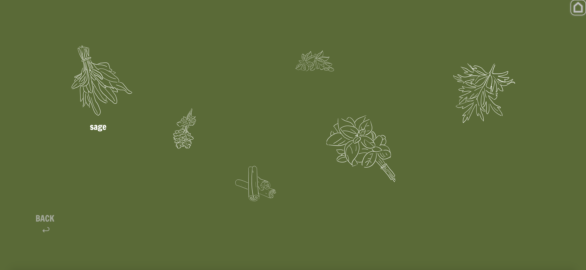
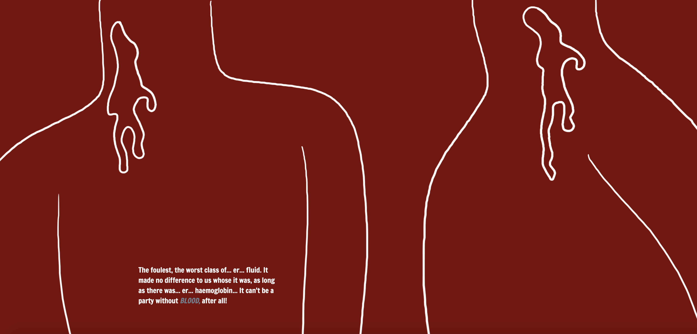
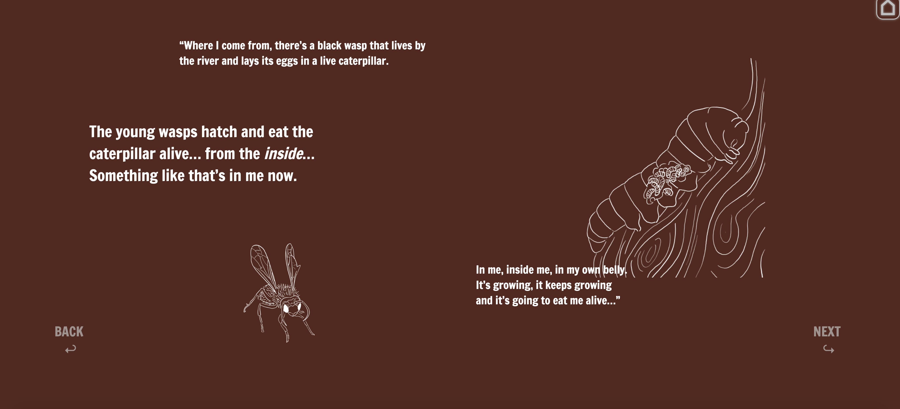
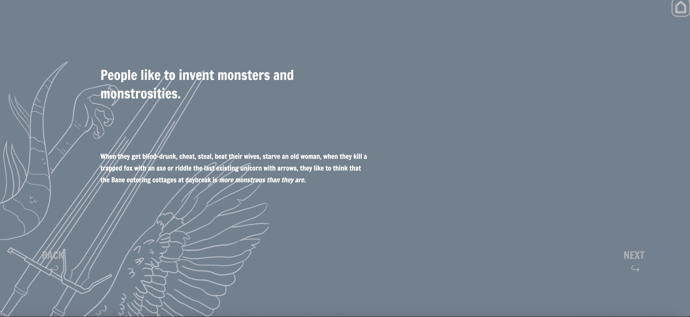
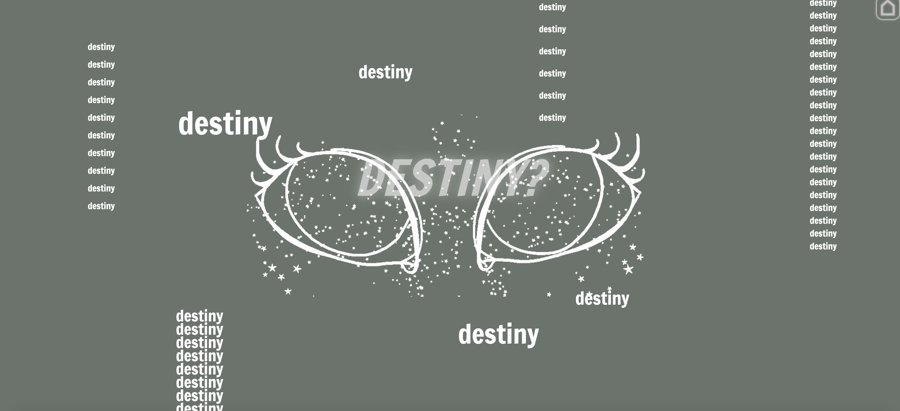
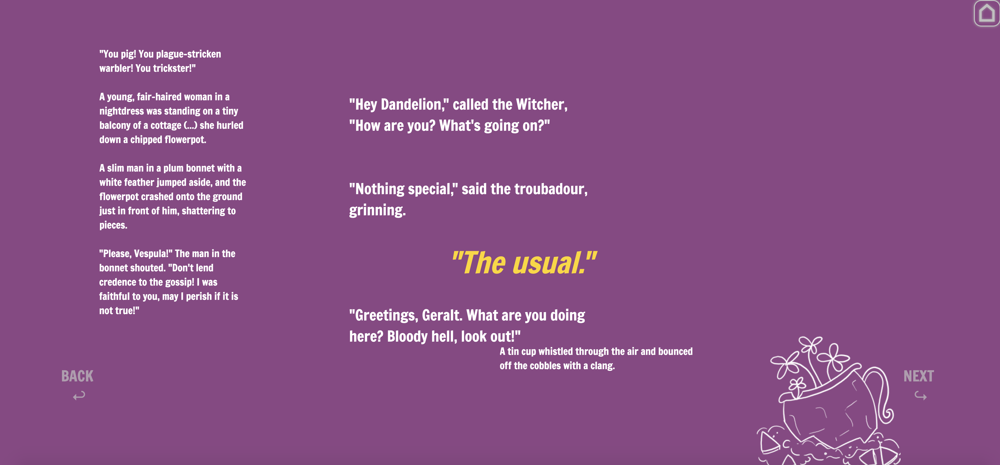
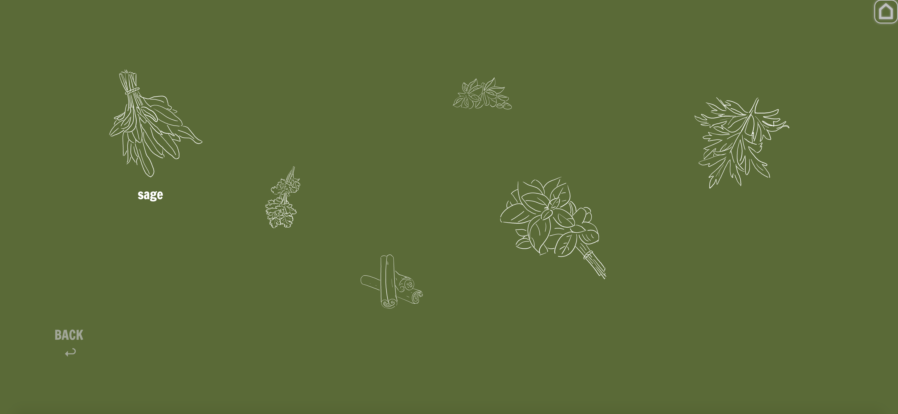
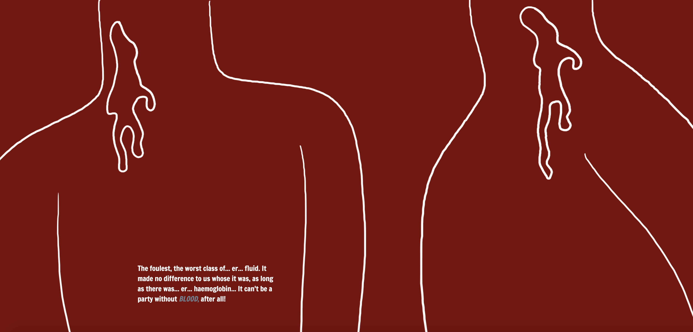
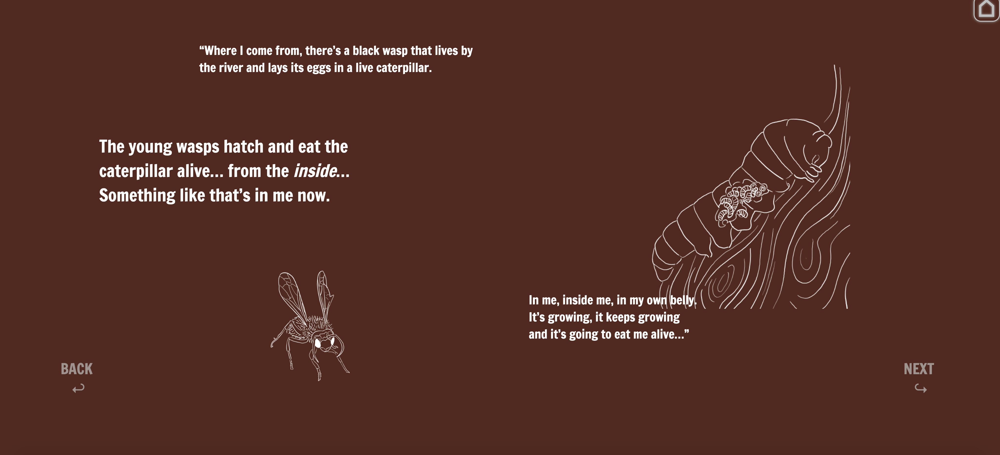